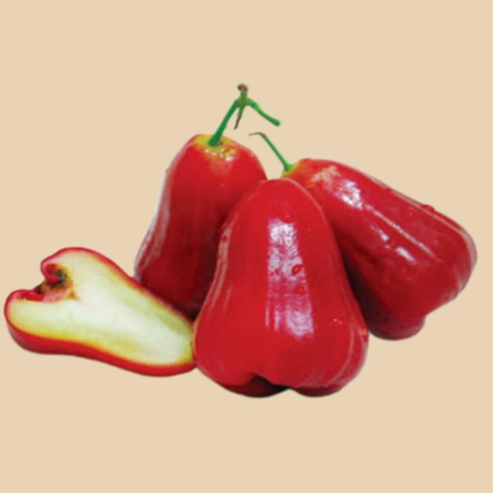

Jambu air merupakan sejenis buah-buahan tempatan yang berbentuk seperti loceng dan tergolong dalam keluarga beri yang boleh dimakan. Boleh didapati dalam pelbagai warna seperti putih, hijau pucat, hijau, merah, ungu, ungu seakan kemerahan ke ungu gelap atau hitam.
